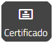

Parabéns!
Você completou o curso e pode gerar (48 horas após a data de sua inscrição) seu certificado acessando o Menu de Usuário
pelo painel cinza do lado direito da tela.
pelo ícone  no topo da página.
no topo da página.
Depois clique no ícone "Certificado" 
Esperamos que tenha sido proveitoso e que você se sinta mais preparado para auxiliar os estudantes na compreensão do itinerário de formação Técnica e Profissional!
Clique no botão abaixo se quiser acessar a versão em PDF dos conteúdos do curso.